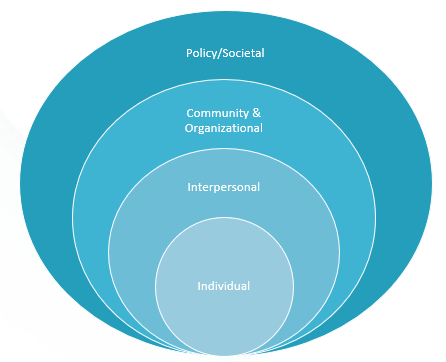

Willkommen beim ENGAGE E-Learning.
intro
ENGAGE e-learning
Understanding Behaviour: Participation in older adults
Why behaviour is never about one thing
Whether someone takes up a new activity is never the result of a single cause. It depends on who they are, who is around them, and what their surroundings make possible — all at once. Research on physical activity in older adults commonly uses the socio-ecological model to make sense of this: the idea that participation is shaped by influences at several levels at the same time, and that these levels interact rather than acting in isolation (Lusmägi & Aavik, 2021; Chen et al., 2025).
The model is often broken into five levels: individual factors — a person's own body, health, habits and the meanings they attach to an activity; interpersonal factors — family, peers and instructors; institutional factors — employers, sports clubs and health services; community factors — the local municipality, facilities and transport; and policy factors — funding, legislation and public campaigns (Lusmägi & Aavik, 2021). A barrier at any one of these levels can be enough to stop participation, even when every other level would support it.
The rest of this module looks at these influences in three groups — individual, interpersonal, and environmental (institutional, community and policy factors combined) — using evidence from older adults themselves, before turning to what you, as a trusted professional, can do through the conversation itself.

The socio-ecological model
Individual, interpersonal, community/organisational and policy/societal levels all interact — a barrier at any one of them can be enough to stop participation, even when every other level would support it. The lessons below group institutional, community and policy factors together as "environmental".
Adapted from Bronfenbrenner, U. (1979). The ecology of human development. Cambridge, MA: Harvard University Press.
What influences participation in older adults
Not everything in a person's life, relationships or surroundings affects participation the same way. Something that makes an activity harder to start or continue is called a barrier; something that makes it easier is called a facilitator.
Research can identify which barriers and facilitators are common across many older adults — this is what the evidence below, organised by level, describes (Chen et al., 2025). But the same influence does not affect everyone the same way: what is a barrier for one person can be a facilitator for another. A "seniors' yoga" class is a useful example: some people avoid it precisely because being invited to an age-labelled group feels like being told they are "old"; others choose it for exactly the opposite reason — being among peers of a similar age and fitness level feels comfortable and motivating, rather than intimidating.
In practice: knowing the general pattern is a starting point, not a conclusion. The same offer can land completely differently depending on how someone sees themselves — it is worth checking which it is for this particular person, rather than assuming.
Intrapersonal factors: what sits with the person
Intrapersonal factors are what a person carries within themselves: their body, health, beliefs, finances and feelings about an activity. A systematic review of 20 studies with over 18,500 older adults found that fear of falling or getting injured was the single most commonly reported barrier to physical activity, followed closely by pain and the effects of ageing on balance, endurance and muscle strength — health can genuinely vary from day to day (Chen et al., 2025). Limited spare time, low interest or motivation, and the perceived cost of activities or of getting to them were also frequently reported.
The same evidence points to what helps. Understanding the benefits of an activity, feeling healthier after taking part, enjoying it, and having it become part of a routine were the most common facilitators — along with simple reassurance from a doctor or physiotherapist for those worried about injury (Chen et al., 2025).
In practice: a hesitant "no" is rarely only about motivation. It is worth asking what, specifically, feels uncertain or risky about this particular activity, rather than assuming the person is simply not interested.
Interpersonal factors: what sits with others
Interpersonal factors are the people around a person: family, friends, peers, instructors and professionals. The same review found that a lack of support from family or peers, caring responsibilities, and family concerns about injury risk were common barriers — as was simply not having anyone to go with, which some older adults experience as unsafe or isolating (Chen et al., 2025). Feeling intimidated, judged, or culturally out of place in a group was also reported, particularly among those with a different language or cultural background to others taking part.
On the facilitator side, support from family and friends, a pet to exercise with, and instructors experienced as friendly rather than purely professional all helped older adults start and continue. Socialising and making new connections through the activity itself was one of the most frequently reported reasons for continuing (Chen et al., 2025).
In practice: asking who else is involved — a partner, a friend, a pet, a group they already know — can reveal a more realistic first step than asking about the activity alone.
Environmental factors: what sits around the person
Environmental factors are the physical and practical surroundings: weather, the built environment, transport, cost and the programmes actually on offer. Poor weather was the most commonly reported environmental barrier in the review — in one study, 97% of participants named it as a deterrent — alongside unsafe or poorly lit streets, parks or facilities that were too far away, and a lack of public transport to reach them (Chen et al., 2025). A lack of activities designed with older adults in mind was also frequently mentioned.
Facilitators mirrored this closely: good weather, well-maintained and well-lit streets, benches for resting, nearby parks, accessible public transport, and low-cost or free programmes tailored to older adults all supported participation (Chen et al., 2025).
In practice: this is often where your local knowledge, as someone embedded in the Gemeinde, matters most — knowing which offers are actually reachable, affordable and suitable can resolve a barrier the person may not think to mention.
Sources
- Lusmägi P, Aavik K. Developing a social-ecological model for promoting physical activity among older adults based on the experiences of 50+ adults. SAGE Open. 2021;11(3). doi:10.1177/21582440211032943.
- Chen Y, Shah S, Chen Y, Owen AJ, Ekegren CL, Ilic D, Gasevic D. Barriers to and facilitators of physical activity among community-dwelling older adults: a systematic review. BMJ Open. 2025;15:e095260. doi:10.1136/bmjopen-2024-095260.
Behaviour change science
Why a “no” has many reasons.
- Why advice alone rarely changes behaviour 7 min · Core
- COM-B in depth 9 min · Core
- What is behind this “no”? 9 min · Core
- Participation changes the system 6 min · Deep dive
Behaviour change techniques (BCTs)
A shared language for what you do.
- What are BCTs and why name them? 8 min · Core
- From barrier to technique 9 min · Core
- What the evidence says, and does not say 8 min · Deep dive
- Choose techniques for your caseload 7 min · Deep dive
Motivation and autonomy
Supporting a choice instead of pushing.
- Autonomy, competence, relatedness 9 min · Core
- MI spirit and ambivalence 10 min · Core
- The righting reflex and reactance 8 min · Core
- Ageing, stigma and identity 8 min · Deep dive
- Trust and the working alliance 8 min · Core
- OARS and change talk in practice 10 min · Core
Behaviour change in conversation
The four steps, with the theory behind each move.
- Getting to know the person (Step 1) 8 min · Core
- Sharing a few options so the person can choose (Step 2) 8 min · Core
- Setting a goal together (Step 2) 9 min · Core
- Planning the first step with the right amount of help (Step 3) 9 min · Core
- Encouragement that works (Step 3) 7 min · Core
- Reframing and commitment (Step 3) 9 min · Core
- A full conversation 10 min · Core
From first step to lasting activity
Follow-up, habits and setbacks.
- Follow-up that closes the loop (Step 4) 8 min · Core
- How habits form 8 min · Core
- Setbacks, coping plans and resilience (Step 4) 9 min · Core
- When the activity does not fit 7 min · Deep dive
- A full follow-up 10 min · Deep dive
Resources
Reference materials for your work.
- Resource hub Reference
Introduction
Aim
Learn the research and theory behind behaviour change and apply them in conversations, so older adults can become more socially and physically active through their own choices.
Who this course is for
This e-learning is for ENGAGE trial Navigators working at Fachstellen, including colleagues with a background in social work. You already bring real experience in supportive conversations — this course adds a shared foundation in the research and theory behind behaviour change, explained from the ground up. No background in psychology or behaviour-change theory is assumed, whatever you already know.
About the course
The course includes 29 short lessons across seven learning modules, plus a resource hub. It takes about 4 hours 1 minute in total; the 23 core lessons take about 3 hours 15 minutes. Optional deep dives let you explore topics further, and you can follow a suggested learning pathway or navigate freely.
Each module connects theory to practice through cases, conversation examples and activities, with a small step to try in your work.